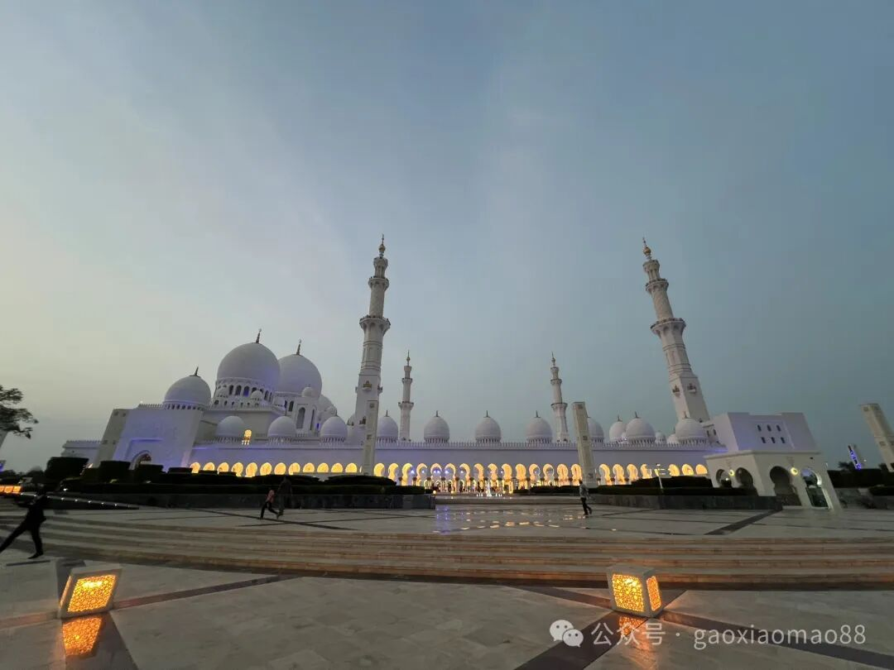
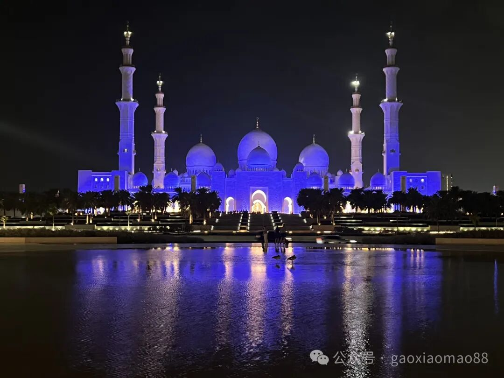
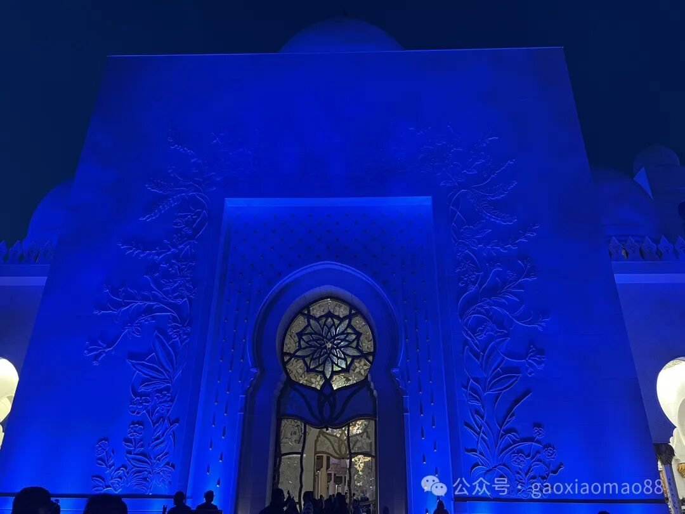
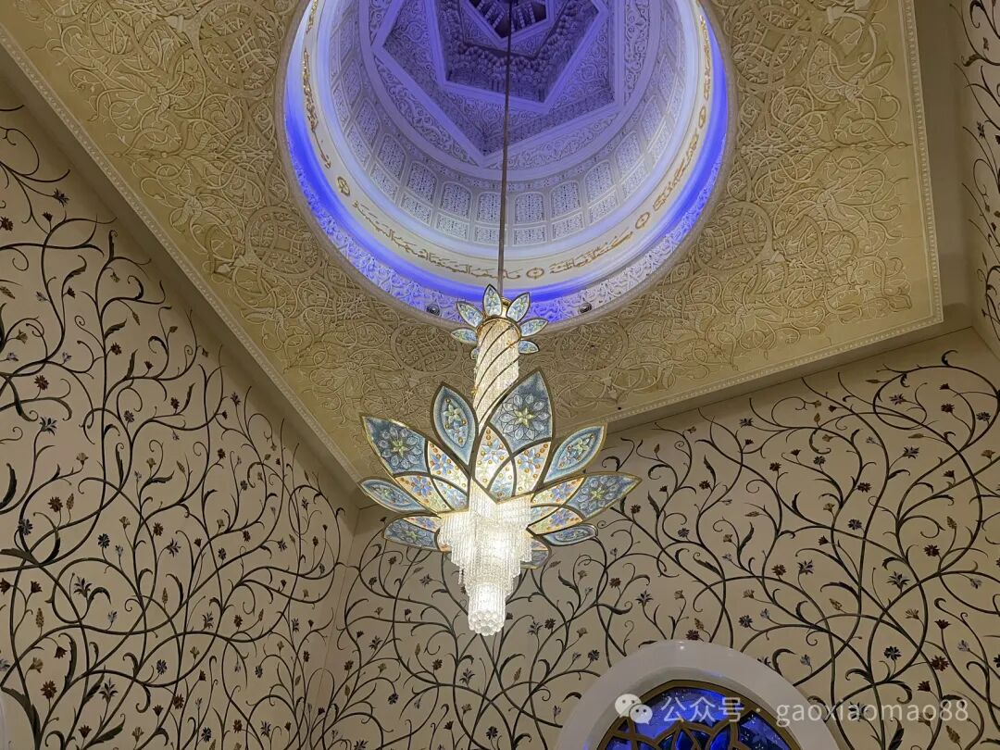
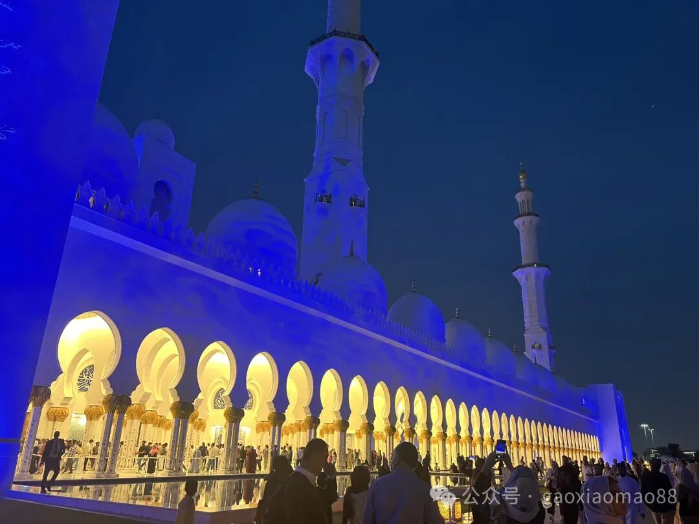
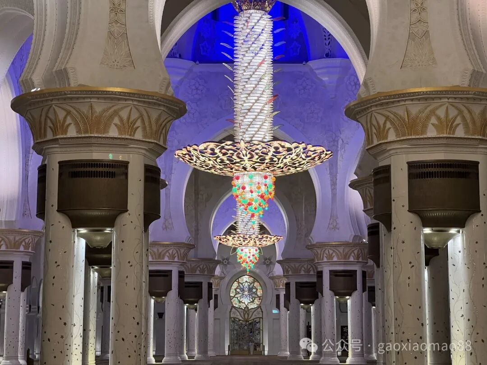
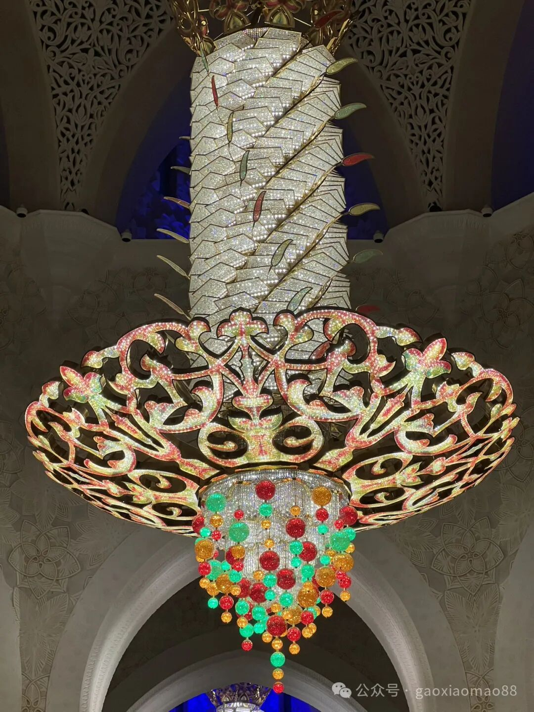
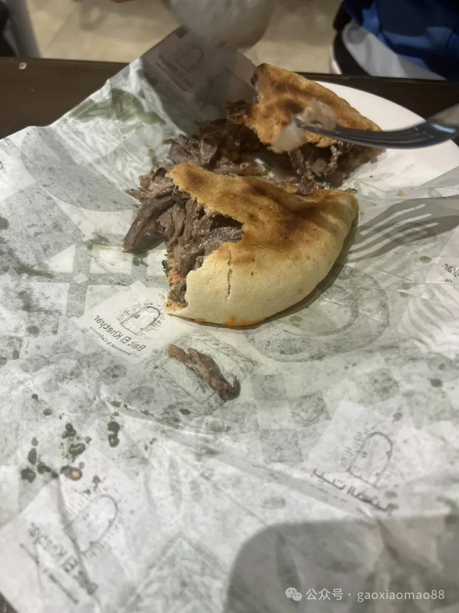

在阿拉伯联合酋长国里，传说石油最多的是迪拜旁边的阿布扎比。
这是网上的资料：
据估算，迪拜的石油大概是40亿桶。 按照现在的油价，再刨去一些开采成本，大概值2000亿美元。 这肯定是一大笔财富，但绝对谈不上让迪拜一百年衣食无忧的地步。 而边上的阿布扎比，石油储量有920亿桶，是迪拜的23倍，相当于全球超过5％的石油储量。
那这么土豪的地方，造的清真寺，显然也非常土豪。
以下是图片







